Explore Tokyo
A Brief History
Tokyo, the dazzling, hyper-modern capital of Japan, is a mesmerizing megalopolis that seamlessly fuses futuristic technology with deep-rooted traditions. It is a city of staggering contrasts: serene, ancient shrines sit peacefully in the shadow of towering, neon-lit skyscrapers, and narrow, historic alleys weave through massive, ultra-modern commercial districts. Renowned globally for its unparalleled culinary scene, cutting-edge fashion, and electrifying pop culture, Tokyo offers a relentless, highly organized, and endlessly fascinating urban experience unlike anywhere else on Earth.
Attractions Map
Top Sights & Activities
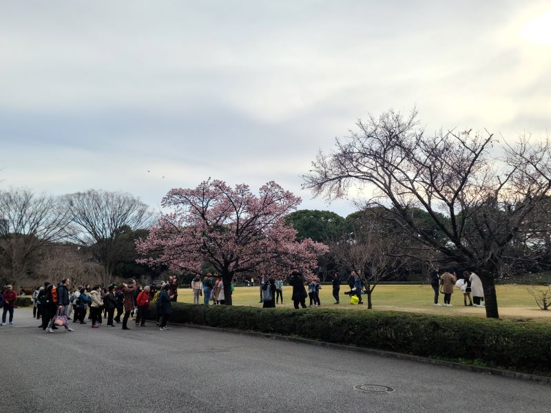
Imperial Palace East National Gardens
An expansive, incredibly meticulously manicured green oasis located on the former site of Edo Castle's innermost defenses, offering serene moats, massive stone walls, and profound historical beauty.
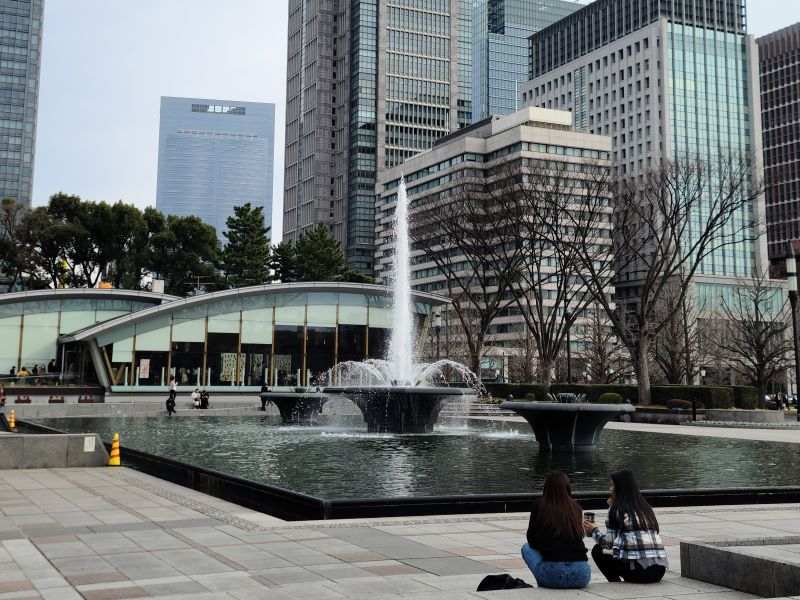
Wadakura Fountain Park
A beautifully elegant, surprisingly peaceful urban park featuring spectacular, modern water fountains and stunning architectural designs perfectly situated near the imperial grounds.
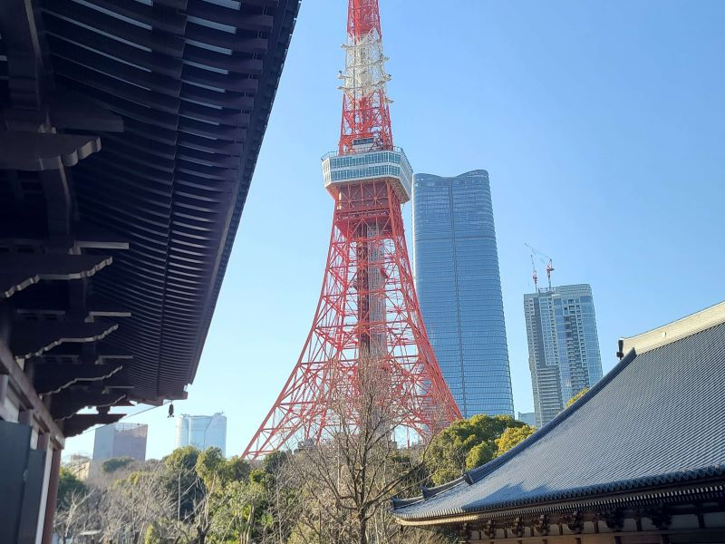
Tokyo Tower
The highly iconic, classic red-and-white lattice communications tower beautifully inspired by the Eiffel Tower, offering a deeply nostalgic, striking silhouette and sweeping, panoramic city views.
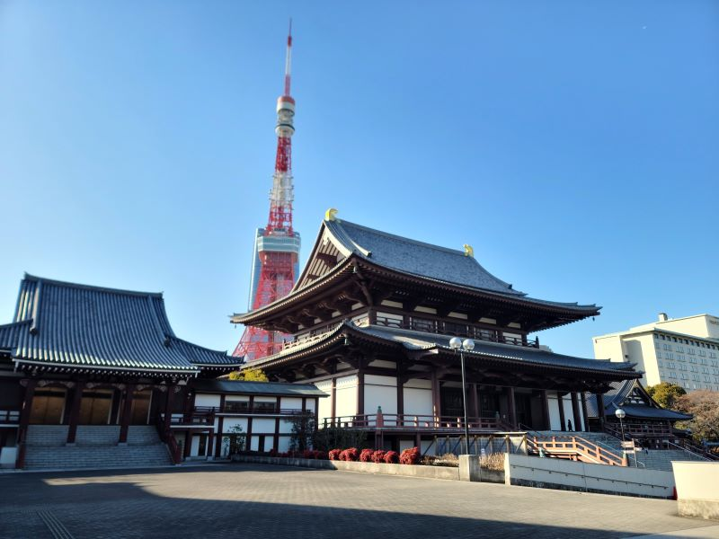
Zojo-ji
A profoundly historic, highly significant Buddhist temple dramatically set against the modern backdrop of Tokyo Tower, famously housing the incredibly grand, ornate mausoleum of the Tokugawa shoguns.
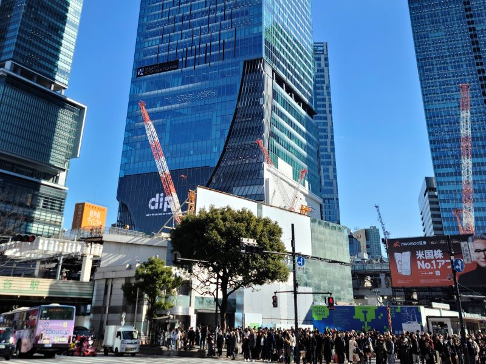
Shibuya Crossing
The absolute most famous, mind-bogglingly busy intersection in the world, an electrifying, neon-drenched spectacle where thousands of pedestrians seamlessly cross in highly organized, mesmerizing chaos.
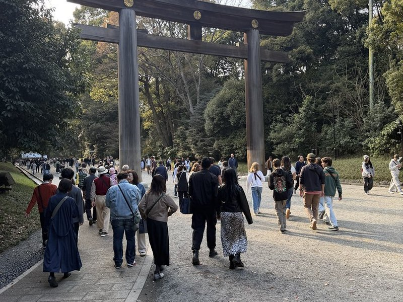
Meiji Jingu
Tokyo's most important, deeply serene Shinto shrine beautifully nestled within a massive, incredibly dense man-made forest, offering a profoundly peaceful, highly spiritual retreat from the metropolis.
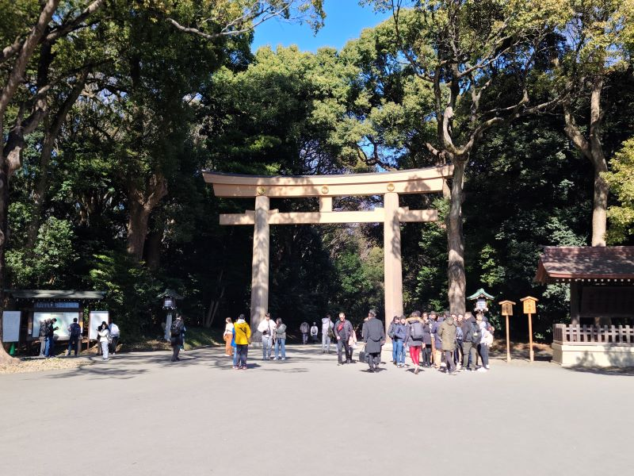
Meiji Jingu Ichino Torii
The massive, incredibly imposing wooden gate marking the grand entrance to the sacred forest, immediately transitioning visitors from the bustling city into a deeply calm, profoundly spiritual realm.
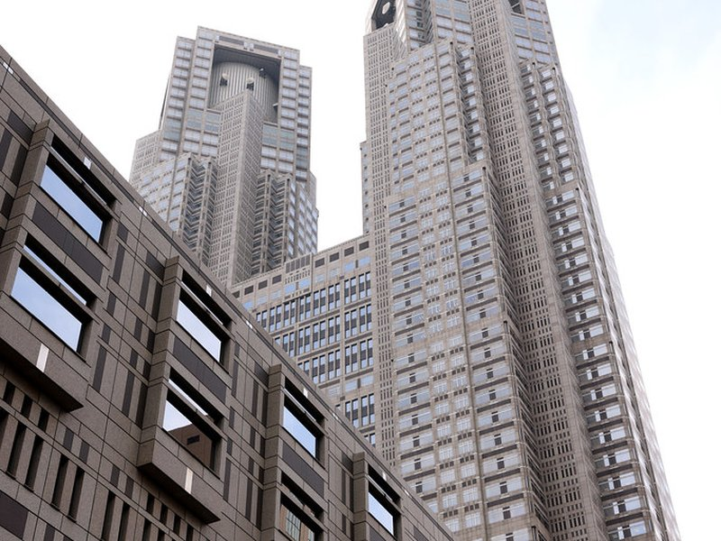
North Observation Deck, Tokyo Metropolitan Government Building
A spectacularly high, completely free observation deck located in a massive architectural marvel, offering breathtaking, unparalleled 360-degree views of the endless urban expanse.
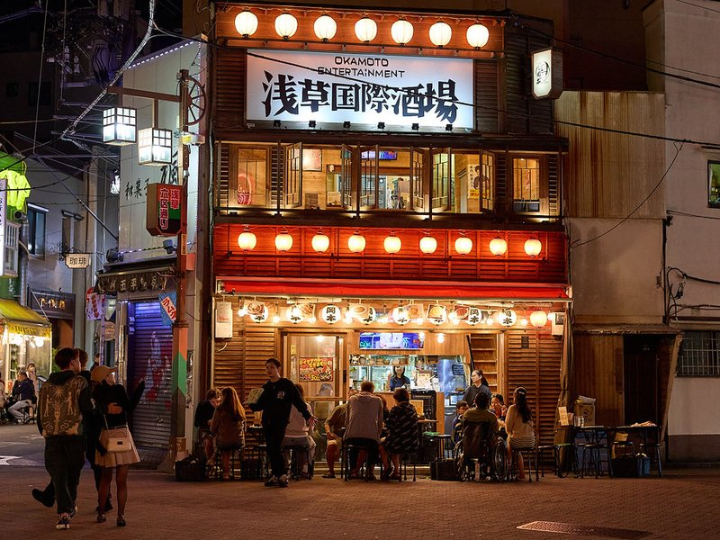
Senso-ji
Tokyo's absolute oldest, most colorful, and deeply revered Buddhist temple, a highly vibrant, spectacularly energetic spiritual center deeply anchored in the historic Asakusa district.
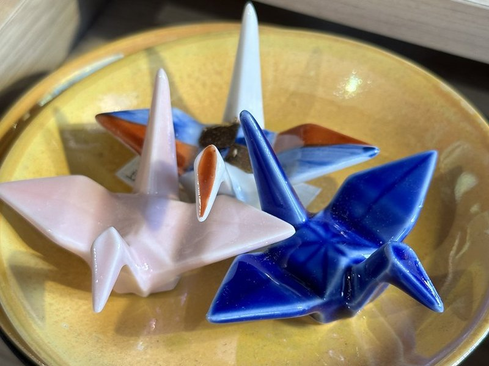
Nakamise Shopping Street
The incredibly lively, deeply historic approach to Senso-ji, densely packed with charming traditional stalls beautifully offering classic local snacks, vibrant yukatas, and quintessential souvenirs.
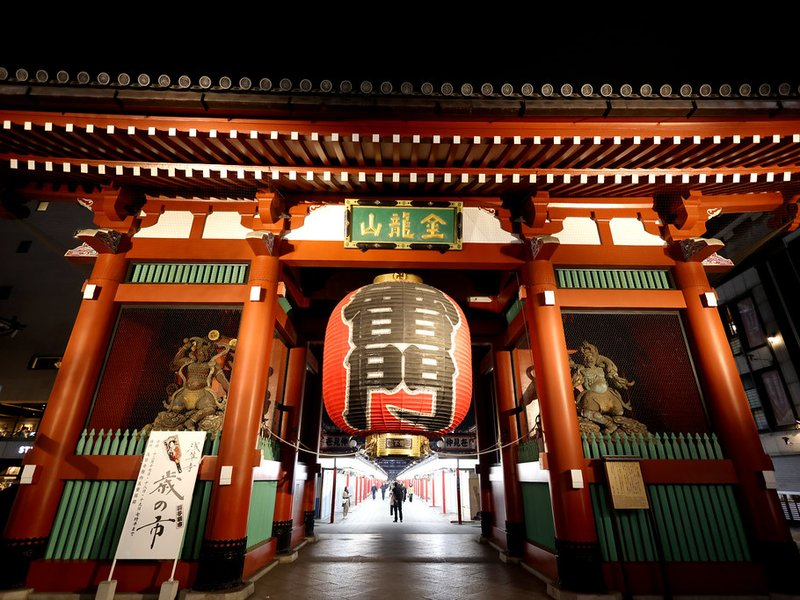
Kaminarimon Gate
The profoundly famous, highly iconic 'Thunder Gate' featuring a colossal, spectacularly dramatic red paper lantern that serves as the absolute, undisputed symbol of Asakusa.
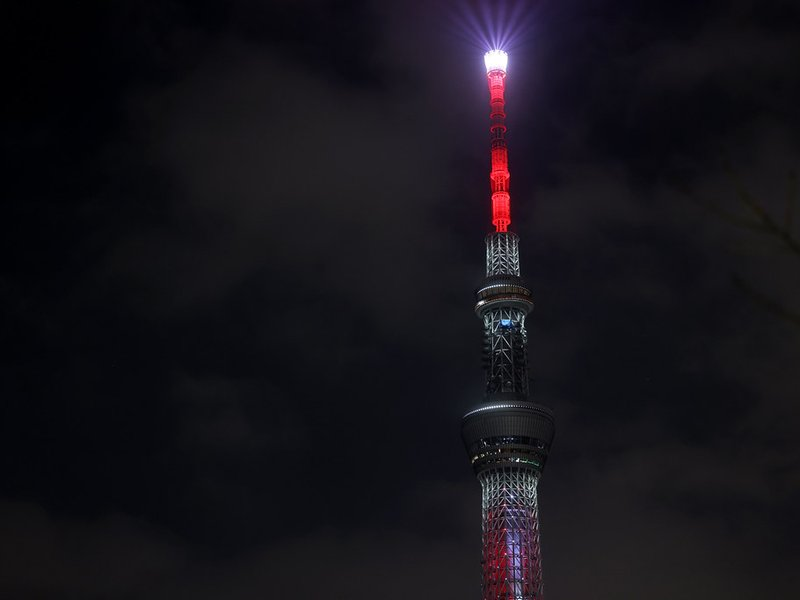
Sumida River Walk
A wonderfully modern, highly scenic pedestrian bridge beautifully connecting the historic Asakusa district with the towering Skytree area, offering spectacular, sweeping views over the wide, tranquil river.
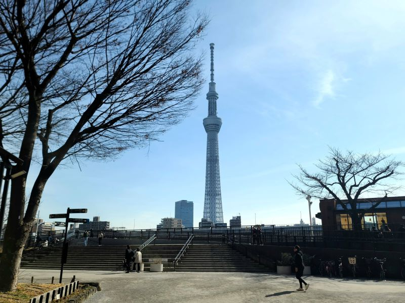
Tokyo Skytree
A towering, hyper-modern architectural masterpiece standing as one of the tallest structures in the world, offering incredibly spectacular, dizzying views that stretch far across the entire Kanto plain.